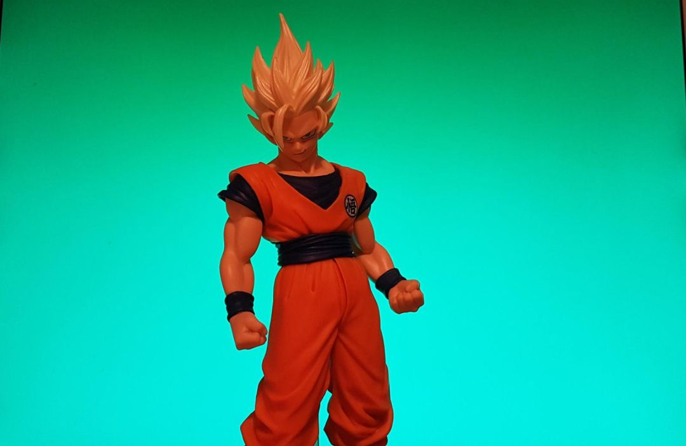
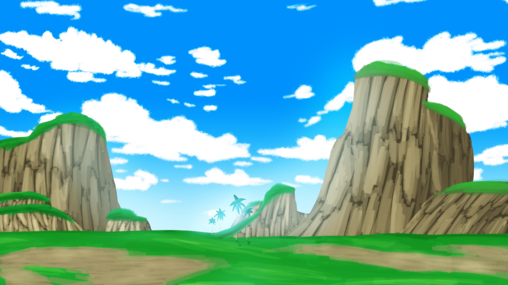

1 / 9
Chroma Key
Composición de Imágenes usando Color
FSIV - Práctica 1 - Ejercicio 2

Primer plano (goku01s.jpg)
+

Fondo (backgroundDB.jpg)
→
🎬 Composición final
Técnica: Reemplazar el fondo verde por la nueva imagen de fondo
🎬 ¿Qué es Chroma Key?
Definición
Técnica de composición visual que reemplaza un color específico
de una imagen con contenido de otra imagen.
- Aplicaciones: Cine, televisión, videojuegos, streaming
- Colores típicos: Verde (más común) y azul
- Ventaja del verde: Contrasta con tonos de piel humana
Resultado: Integración natural de sujetos en nuevos entornos
⚙️ Proceso Técnico (3 pasos)
1️⃣ Detección del Color Clave
Se convierte la imagen a espacio HSV para separar tono (H) de saturación (S) y valor (V).
Es más fácil detectar un color específico en HSV que en RGB.
2️⃣ Generación de Máscara
Se crea una máscara binaria: píxeles del color clave = 0 (transparente),
resto = 255 (opaco). Los valores intermedios permiten transiciones suaves.
3️⃣ Composición Final
Se combinan primer plano y fondo usando la máscara:
donde máscara = 0 → píxel de fondo, donde máscara = 255 → píxel de primer plano.
🖥️ Interfaz del Programa
'IN'
Imagen de primer plano. Permite seleccionar color con click del ratón.
'OUT'
Resultado final de la composición en tiempo real.
'CHROMA KEY MASK'
Máscara generada. Blanco=mantener, Negro=reemplazar.
Trackbars de Control
- Hue (0-180): Selecciona qué tono reemplazar
- Sensitivity (0-100): Tolerancia en la detección
Comando: ../build/chroma_key goku01s.jpg backgroundDB.jpg
🎨 Parámetro: HUE (Tono)
¿Qué controla?
Selecciona qué color será reemplazado en el círculo cromático
- Hue = 0°: Rojo
- Hue = 60°: Verde (valor típico para chroma key)
- Hue = 120°: Azul
- Hue = 180°: Cian
Nota técnica: OpenCV usa valores 0-180 en lugar de 0-360 grados
para optimizar el almacenamiento en 8 bits.
Demo: Mover trackbar Hue y observar cambios en la máscara
🎯 Parámetro: SENSITIVITY (Sensibilidad)
¿Qué controla?
Tolerancia alrededor del Hue seleccionado
- Sensitivity baja (5-10): Muy estricta → solo colores muy similares
- Sensitivity media (15-25): Equilibrada → buena detección
- Sensitivity alta (50+): Muy tolerante → puede detectar colores no deseados
⚠️ Problemas comunes:
• Muy baja: "agujeros" en la máscara
• Muy alta: se "come" partes del sujeto
Demo: Ajustar Sensitivity y mostrar efectos en la máscara
🖱️ Selección Interactiva con Ratón
¿Cómo funciona?
Click izquierdo en la ventana 'IN' → extrae el Hue del píxel seleccionado
Ventajas de esta funcionalidad:
- No requiere conocer el valor exacto del Hue
- Útil para fondos no uniformes
- Permite seleccionar tonos específicos con variaciones de iluminación
- Ajuste automático del trackbar
💡 Tip: Hacer click en diferentes zonas del fondo verde para encontrar
el tono óptimo según la iluminación local.
Demo: Click en diferentes zonas verdes y comparar resultados
🔍 Interpretando la Máscara
Valores de la máscara:
- Blanco (255): Mantener píxel de primer plano
- Negro (0): Usar píxel de fondo
- Grises (1-254): Transición suave (antialiasing)
¿Qué buscar en una buena máscara?
- ✅ Silueta clara del sujeto
- ✅ Fondo completamente negro
- ✅ Bordes suaves (sin pixelado)
- ❌ Sin "agujeros" en el sujeto
- ❌ Sin restos de fondo verde
Demo: Mostrar ventana de máscara y explicar cada zona
🚀 Mi Implementación Completa
✅ Funcionalidades implementadas:
fsiv_apply_chroma_key() - Función principalfsiv_combine_images() - Composición final- Interfaz interactiva con trackbars
- Selección de color con ratón
- Visualización en tiempo real
- Soporte para imágenes, vídeo y cámara
🎯 Estado: Todas las funcionalidades completadas satisfactoriamente.
Todos los tests pasan correctamente.
¡Demostración en vivo!
Vamos a ver el programa en acción con parámetros optimizados